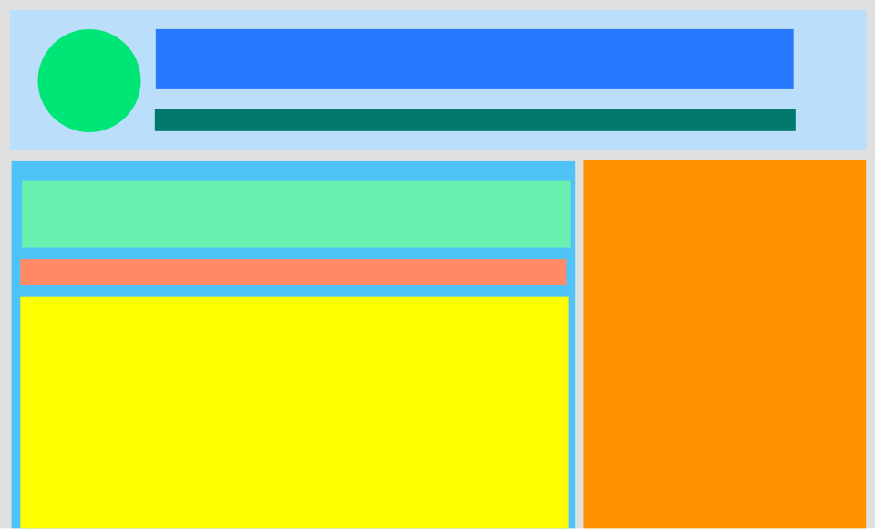

Comment présenter du contenu sur mesure sans vous emmêler dans la boucle
Ce dont on va parler
- Les sites dynamiques
- Comment on demande à WordPress ce qu'on veut (Les requêtes)
- Comment on affiche les résultats (La boucle)
- Ce que sont les articles et les pages
- Les Custom Post Types
- Les métadonnées
Il y a longtemps, on construisait les pages web, une à une.
